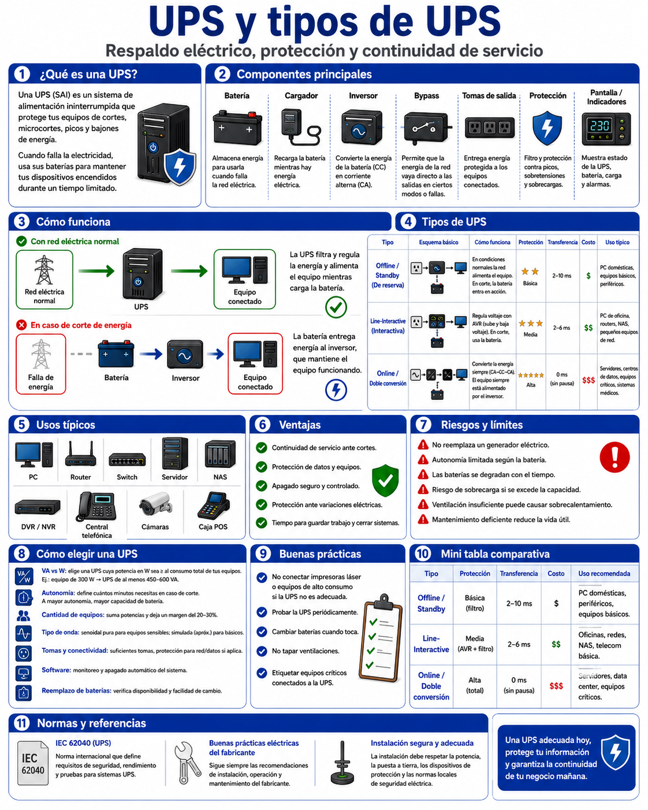
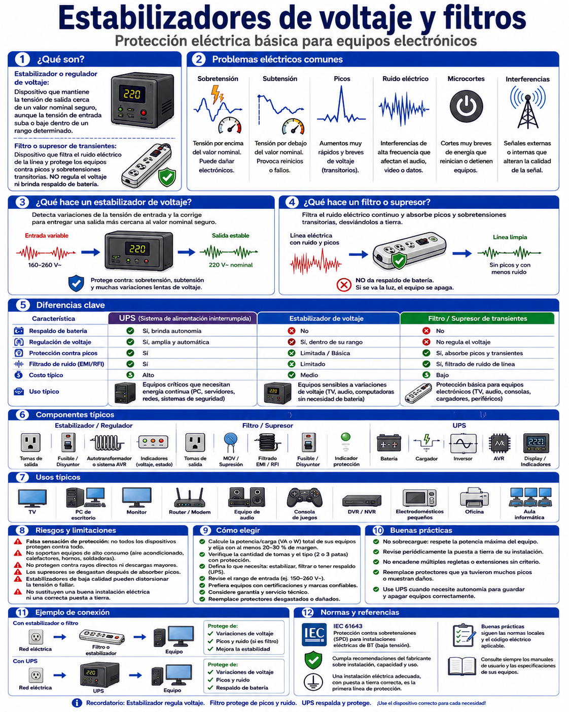

Un UPS (Uninterruptible Power Supply — Sistema de Alimentación Ininterrumpida, SAI) es un equipo que se ubica entre la red eléctrica y los dispositivos críticos (switches, routers, servidores, racks) para mantenerlos encendidos durante un corte de energía y, según el tipo, además corregir problemas de calidad eléctrica mientras hay suministro normal.

Existen tres topologías principales, que se diferencian por cómo y cuándo intervienen las baterías frente a un problema en la red eléctrica.
Off-line / Standby
Es el más simple y económico. La carga se alimenta directamente de la red; el UPS solo monitorea la tensión y conmuta a batería cuando detecta un corte o una caída fuera de rango. Ese pequeño tiempo de conmutación (milisegundos) es imperceptible para la mayoría de los equipos de red, pero puede ser crítico para servidores muy sensibles.
Line-Interactive
Agrega un AVR (regulador automático de voltaje) integrado: ante una sobretensión o caída de tensión moderada, ajusta el voltaje con un transformador de derivaciones (taps) sin necesidad de usar la batería. Es el equilibrio más común entre costo y protección para racks de PyMEs, cuartos de telecomunicaciones y aulas.
Online / Doble conversión
Nunca conecta la carga directamente a la red: primero convierte la CA de entrada en CC para cargar la batería, y luego un inversor la vuelve a convertir en CA limpia y estable para el equipo. El resultado es tiempo de conmutación cero y la mejor calidad de energía posible, a costa de mayor consumo, tamaño y precio.
| Tipo | Tiempo de conmutación | Regula tensión sin batería | Costo relativo | Uso recomendado |
|---|---|---|---|---|
| Off-line / Standby | ~5–10 ms | No | Bajo | PC individual, equipos poco críticos |
| Line-Interactive | ~2–6 ms | Sí (AVR) | Medio | Racks de comunicaciones, PyMEs, aulas |
| Online / Doble conversión | 0 ms | Sí (siempre activo) | Alto | Data center, servidores críticos, equipos médicos |
Un estabilizador de corriente (o regulador automático de voltaje, AVR) corrige las variaciones de tensión de la red eléctrica sin disponer de baterías: no protege ante un corte total de energía, solo ante tensión fuera de rango.
Funciona mediante un transformador con derivaciones (taps) que conmuta automáticamente para acercar la tensión de salida al valor nominal, en unos pocos milisegundos, sin usar batería.
Un filtro de línea (o supresor de picos/surge protector) protege contra transitorios de muy corta duración: picos de tensión producidos por rayos cercanos, arranque de motores, o ruido eléctrico de otros equipos en la misma instalación.
Internamente utiliza componentes como varistores (MOV) que absorben y disipan la energía del pico, desviándola a tierra. Por eso una buena puesta a tierra es indispensable para que el filtro funcione correctamente.
Los tres dispositivos se complementan; no son alternativas entre sí, sino capas de protección distintas frente a distintos problemas eléctricos.

Antes de calcular la UPS necesaria hay que entender cuatro conceptos que se usan en el simulador de la siguiente sección.
Con esos datos se calcula la energía necesaria (en Wh) y de ahí la capacidad de batería (en Ah) requerida para sostener la carga durante el tiempo deseado.
Ingresá la potencia real de los equipos a proteger y el tiempo de autonomía deseado. El simulador calcula la potencia aparente necesaria, sugiere una capacidad comercial de UPS, y estima la energía y la batería necesarias para sostener esa autonomía.